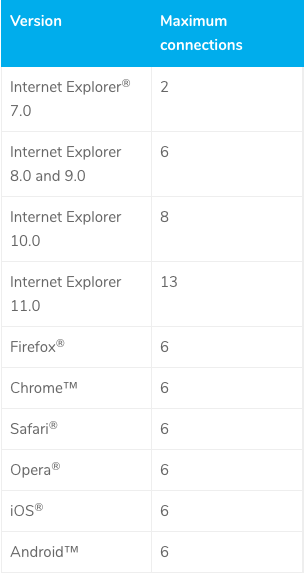

HTML & CSS, p. 2
Stanislav Dolgachov
About me
-
Senior software engineer
-
3+ years of production experience
-
5 projects
-
I like dogs
Agenda
-
1. Pseudos
-
2. Grids
-
3. Pre-processors & PostCSS
-
4. Methodologies
-
-------Coffee break------
-
5. Organizing CSS code
-
6. Adaptive/Responsive
-
7. Sprites
-
8. Best&Bad practices
<<<<<< Q&A >>>>>>>>
Pseudos
Example
selector:pseudo-class {
property: value;
}
div:hover {
background-color: #F89B4D;
}
Pseudo-class
- :active
- :any-link
- :checked
- :default
- :disabled
- :empty
- :enabled
- :first-child
- :focus
- :hover
- :invalid
- :last-child
- :nth-child()
- ...
Example
selector::pseudo-element {
property: value;
}
p::first-line {
color: blue;
text-transform: uppercase;
}
Pseudo-element
- ::after
- ::before
- ::cue
- ::first-letter
- ::first-line
- ::selection
- ::backdrop
- ::placeholder
- ::marker
- ...
CSS cascade

Try me
Grids
Floats
Inline-blocks
Flex-boxes
Pre-processors
Why do we need pre-processors?
The main goal is to make developer experience better
How does it work?

3 most popular
CSS pre-processors

SASS
2007

LESS
2009

Stylus
2010

What is the difference?
80/20
80% similar
20% different
Syntax
LESS & SCSS
body {
background-color: #efefef;
font-size: 100% Helvetica, sans-serif;
}
SASS
body
background-color: #efefef
font-size: 100% Helvetica, sans-serif
Stylus
body
background-color #efefef
font-size 100% Helvetica, sans-serif
Stylus supports all of them
Variables
SCSS
$button-background: #27adec
.btn {
background: $button-background
}
LESS
@button-background: #27adec;
.btn {
background: @button-background;
}
Stylus
button-background = #27adec
.btn
background button-background
Nested selectors
LESS & SCSS
.main-header {
&__text {
background-color: #fff;
}
&__controls {
padding: 10px;
}
&__column {
margin: 10px;
}
}
CSS
.main-header__text {
background-color: #fff;
}
.main-header__controls {
padding: 10px;
}
.main-header__column {
margin: 10px;
}
Imports
_reset.scss
html,
body,
ul,
ol {
margin: 0;
padding: 0;
}
base.scss
@import 'reset';
body {
font: 100% Helvetica, sans-serif;
background-color: #efefef;
}
Calculations
Sass, LESS, & Stylus
body {
margin: (14px/2);
top: 50px + 100px;
right: 100px - 50px;
left: 10 * 10;
}
Mixins
LESS
No parameters
bordered {
border: 1px solid #000;
border-top-color: #444;
border-bottom-color: #444;
}
#main {
.bordered;
}
With parameters
.transform-scale (@x, @y) {
-webkittransform: scale(@x, @y);
transform: scale(@x, @y);
}
.main {
.transform-scale(2,3);
}
SASS
=transform-scale($x: 2, $y: 2)
-webkit-transform: scale($x, $y)
transform: scale($x, $y)
.main
+transform-scale(2, 3)
SCSS
@mixin transform-scale ($x: 2, $y: 2){
-webkit-transform: scale($x, $y);
transform: scale($x, $y);
}
.main{
@include transform-scale(2,3)
}
CSS
.main{
-webkit-transform: scale(2, 3);
transform: scale(2, 3);
}
Stylus
transform-scale (x, y)
-webkit-transform scale(x, y)
transform scale(x, y)
.main
transform-scale(2,3)
Color functions
SASS
rgb($red, $green, $blue)
hsl($hue, $saturation, $lightness)
hue($color)
saturation($color)
lightness($color)
adjust-hue($color, $degrees)
lighten($color, $amount)
darken($color, $amount)
saturate($color, $amount)
desaturate($color, $amount)
grayscale($color)
complement($color)
invert($color)
...
LESS
rgb(@red, @green, @blue);
hsl(@hue, @saturation, @lightness);
hue(@color);
saturation(@color);
lightness(@color);
saturate(@color, @amount);
desaturate(@color, @amount);
lighten(@color, @amount);
darken(@color, @amount);
fadein(@color, @amount);
fadeout(@color, @amount);
spin(@color, @angle);
mix(@color, @angle);
grayscale(@color);
contrast(@color, @dark, @light, threshold);
...
STYLUS
rgba(color, alpha)
lighten(color, amount)
darken(color, amount)
desaturate(color, amount)
saturate(color, amount)
invert(color)
hue(color)
saturation(color);
lightness(color);
...
Pre-processors drawbacks
It is not a real CSS
.accordion {
$accordion-header-color: $primary-color;
$accordion-padding: 1em;
@extend %module;
@include transition(all 0.3s ease-out);
background: $accordion-header-color;
padding: $accordion-padding;
}
Sometimes they make everything too sophisticated
&__moon{
& .forecast-extra-info__logo {
background: url('../img/moon_states.png') no-repeat;
}
@for $i from 0 through 30 {
&_#{$i} .forecast-extra-info__logo {
background-position: $i*(-58px) 0;
}
}
}
PostCSS
PostCSS
from 2013

How does PostCSS work?

What can we do with PostCSS?
- Polyfills
- Support old browsers
- Language extensions
- Optimization
- Syntax sugar
- Analytics
more than 90 plugins

You always can write your own plugin!
Usage
var postcss = require('postcss');
postcss([
require('autoprefixer'),
require('stylelint')({
syntax: 'scss'
})
])
.process(css)
.then(result => console.log(result.css))
With great power comes great responsibility

Methodologies
Big-medium size projects problems
-
Styles encapsulation
-
Code reuse
-
Fragility of CSS code (cascades, dependencies...)
Most known and popular of them are
-
BEM
Block Element Modifier -
SMACSS
Scalable and Modular Architecture for CSS -
OOCSS
Object Oriented CSS
BEM Example
<% text-critical %>
<% text-warning %>
<% test-info %>
Organizing CSS Code
Sooner or later...
How to?
main.scss
@import '_variables';
@import '_mixins';
@import '_fonts';
@import 'blocks/_common';
@import 'blocks/_layout';
...
@import '_themes';
variables.scss
// Fonts
$font-roboto-regular: 'roboto-regular', Tahoma, sans-serif;
$font-roboto-regularitalic: 'roboto-regularitalic', Tahoma, sans-serif;
...
// Paths
$image-path: '../../img/';
// Colors
$black: #000;
$white: #fff;
...
// Layout
$layout: (
header: (
background-color: #f5f6f8
),
left-sidebar: (
z-index: 100,
width: 150px,
background-color: #0a2756
),
right-sidebar: (
z-index: 80,
background-color: rgba($black, .2)
),
grid: (
columns-amount: 4
)
);
Reusing code
DRY
KISS
YAGNI
Responsive Web Design
Viewport
Fluid grid
- All dimension converting to percents
@media
- Device type
- Dimension (min/max width or height)
- Pixel ratio
- Device orientation
- ...and so on
Flexible images
- max-width: 100%;
- HTML5 <picture> tag
- Icon fonts (e.g. Font Awesome)
- SVG
Sprites
Do we need to use sprites? Are there any issues using them?
Yes, you need
until HTTP/2 will be everywhere
Browser Limits

2018
What is sprite?
Nowadays
- Due to retina displays, SVG sprites are preferrable
- A lot of tools for automation build process, e.g. gulp-sprite-generator for Gulp
Bad practices
- Inline styles
- !important
- ID selectors (and tag selectors)
- Huge selectors or cascades
- Extra elements in markup
- Things that aren't clear or obvious
- Transliteration and shortens in class names
- Sophisticated pre-processors code
Best practices
- Minify amount of static files on page
- Include CSS files in the <head>; JS — before </body>
- Use tags according to their purpose (Semantic)
- Write and keep your code clean and REFACTOR it
- Use source maps
- Use CSS Preprocessor / CSS Postprocessor
- Use methodology (BEM)
- Use component based approach
Thank you
Questions?